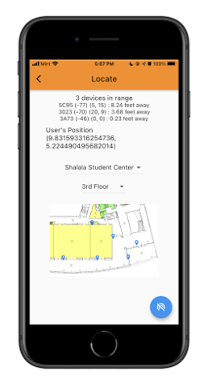

By measuring the signal strength emitted from Bluetooth devices, triangulate and precisely determine your location.
Locus was created with the intention of solving the problem of indoor navigation. GPS struggles to work accurately indoors because the signals from the satellites are easily interfered with. For our Bluetooth signal, we wanted to use Bluetooth Low Energy 5.1 as it consumed less battery to use while still emitting singlas at a useful range. We used the micro:bit V2 board as it met our hardware needs while having a small body and being inexpensive.
By using our phone's built in Bluetooth scanner, we can receive signals from multiple devices and measure the signal strength. With our application, we took the 3 strongest signals and by use of an equation, we were able to calculate the distance from our phone to each device. We can interpret these distances as the radius of a circle around the Bluetooth emitter. When we have the 3 circles to represent our 3 distances, the final step visually would be to look for the intersection of all the circles. To do this, we imagine plotting each device on a grid and getting (x,y) positions for each, then by using triangulation, we can accurately plot our current position on the same grid.